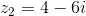
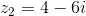
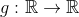
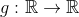
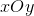
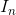

Bacalaureat Matematică 2017 Mate - Info | Modele de subiecte
Subiectul I
- Se consideră numerele complexe
 și . Arătați că numărul este real.
și . Arătați că numărul este real.
Rezolvare:
Calculăm produsul numerelor complexe şi  :
:
.
Calculăm acum numărul :
Deci, numărul , care este un număr real.
- Calculați
 , unde
, unde  , și , .
, și , .
Rezolvare:
Ştim că , deci .
Calculăm :
.
Așadar, avem că:
.
Rezolvare:
Punem condiţia de existenţă:
0">
8\ \Big| :5">
\frac{8}{5}">
.
Acum rezolvăm ecuaţia .
Logaritmii au aceeaşi bază, înseamnă că şi cantităţile de sub logaritmi trebuie să fie egale, adică:
Am obţinut o ecuaţie de gradul al II-lea, pe care o rezolvăm:
.
.
Am obţinut soluţiile şi .
Din condiţia de existenţă avem că , iar  nu aparţine acestui interval, deci singura soluţie pentru ecuaţia din enunţ este .
nu aparţine acestui interval, deci singura soluţie pentru ecuaţia din enunţ este .
.
- Calculaţi probabilitatea ca, alegând un număr din mulțimea numerelor naturale de două cifre, acesta să fie multiplu de
 .
.
Rezolvare:
Scriem formula probabilităţii:
.
Numărul cazurilor posibile este , fiindcă sunt de numere naturale de două cifre, adică numerele de la  până la .
până la .
Numerele de două cifre care sunt multiplii lui sunt: . Deci sunt cazuri favorabile.
Rezultă ca probabilitatea este:
.
- În reperul cartezian  se consideră dreapta
 de ecuație și punctul
de ecuație și punctul  . Determinați ecuația paralelei duse prin punctul
. Determinați ecuația paralelei duse prin punctul  la dreapta .
la dreapta .
Rezolvare:
Notăm dreapta care trece prin punctul şi este paralelă cu dreapta cu .
Dreptele si sunt paralele, deci au pantele egale. Calculăm panta dreptei din ecuaţia acesteia.
Ecuaţia dreptei este
.
Panta dreptei este raportul dintre coeficientul lui şi coeficientul lui  :
:
.
Rezultă că şi panta dreptei este tot , fiindcă dreptele au pantele egale.
Ecuaţia dreptei este:
- Arătați că , pentru orice număr real
 .
.
Rezolvare:
Observăm că membrul stâng din enunţ seamănă cu formula cosinusului diferenţei a două valori:
.
Deci, ţinând cont de această formulă, avem că:
.
Subiectul II
- Se consideră matricele
 și , unde este număr real.
și , unde este număr real. - Calculați .
- Demonstrați că , pentru orice număr real .
- Determinaţi numerele naturale
 și
și  , știind că .
, știind că .
Rezolvare:
- Aflăm și apoi calculăm .
.
Rezultă că:
.
- Calculăm :
.
Calculăm :
Calculăm :
Din relațiile  și de mai sus, rezultă că:
și de mai sus, rezultă că:
.
- Calculăm :
![\begin{align*} &A(n)\cdot B(p)\\\\ &=\begin{pmatrix} n & 0 & 0\\ 0 & n & 0\\ 0 & 0 & 1 \end{pmatrix}\cdot \begin{pmatrix} 0 & 0 & p\\ 0 & p & 0\\ 2 & 0 & 0 \end{pmatrix} \\\\&=\begin{pmatrix} n\cdot0+0\cdot0+0\cdot2 & n\cdot0+0\cdot p+0\cdot0 &n\cdot p+0\cdot0+0\cdot0 \\ 0\cdot0+n\cdot0+0\cdot2 &0\cdot0+n\cdot p+0\cdot0 &0\cdot p+n\cdot0 +0\cdot0\\ 0\cdot0+0\cdot0+1\cdot2& 0\cdot0+0\cdot p+1\cdot0 &0\cdot p+0\cdot0+1\cdot0 \end{pmatrix} \\\\&=\begin{pmatrix} 0+0+0 &0+0+0 &np+0+0 \\ 0+0+0 & 0+np+0 &0+0+0 \\ 0+0+2 & 0+0+0 & 0+0+0 \end{pmatrix} \\\\&=\begin{pmatrix} 0 & 0 & np \\ 0 & np & 0\\ 2 & 0 & 0 \end{pmatrix} \end{align*}](../../../../media/webbooks/832/6669/images/equations/ubv5-0qki7v911h6_dyoda==.svg)
.
Aflăm :
.
Atunci, obținem:
.
Dar  şi
şi  sunt numere naturale, rezultă ca
sunt numere naturale, rezultă ca  , sau ,
, sau ,  .
.
Rezolvare:
- Calculăm
 :
:
Știm că , de unde obținem că:
.
- Pentru avem că .
Împărţim polinomul la :

Am obţinut câtul şi restul  .
.
- Folosind Relaţiile lui Viete calculăm şi :
Calculăm acum suma pătratelor rădăcinilor polinomului:
Pentru avem că , adică .
Rezultă că polinomul nu are toate rădăcinile reale.
Subiectul III
- Se consideră funcţia , .
- Arătați că , .
- Determinaţi numărul real , știind că punctul aparține tangentei la graficul funcţiei care trece prin punctul de abscisă
 situat pe graficul funcţiei .
situat pe graficul funcţiei . - Demonstrați că ecuația are exact două soluții reale distincte.
Rezolvare:
- Calculăm :

, .
- Ecuaţia tangentei care trece prin punctul de abcisă este .
Calculăm  şi :
şi :
.
.
Înlocuind în ecuaţia tangentei, obţinem:
.
Punctul aparţine tangentei, înseamnă că putem înlocui coordonatele acestuia în ecuaţia tangentei și obținem:
.
- Avem că:
.
.
Calculăm limitele la şi ale funcţiei :
Rezultă că ecuaţia  are exact două soluţii reale distincte.
are exact două soluţii reale distincte.
- Pentru fiecare număr natural nenul , se consideră numărul
 .
. - Calculați .
- Demonstrați că , pentru orice număr natural , .
- Demonstrați că .
Rezolvare:
- Calculăm :
.
- Calculăm :
![\begin{align*} &I_{n+1}+2I_n+2I_{n-1}=\\\\&=\int_{0}^{1}\frac{x^{n+1}}{x^2+2x+2}\ \mathrm{d}x +\int_{0}^{1}\frac{x^n}{x^2+2x+2}\ \mathrm{d}x + \int_{0}^{1}\frac{x^{n-1}}{x^2+2x+2}\ \mathrm{d}x\\\\&=\int_{0}^{1}\frac{x^{n+1}+x^n+x^{n-1}}{x^2+2x+2}\ \mathrm{d}x\\\\&= \int_{0}^{1}\frac{x^{n-1}\cdot(x^2+2x+2)}{x^2+2x+2}\ \mathrm{d}x\\\\&=\int_{0}^{1}x^{n-1}\ \mathrm{d}x\\\\&=\frac{x^{n-1+1}}{n-1+1}\bigg|_{0}^{1}\\\\&=\frac{x^n}{n}\bigg|_{0}^{1}\\\\&=\frac{1^n}{n}-\frac{0^n}{n}\\\\ &=\frac{1}{n}-\frac{0}{n}\\\\ &=\frac{1}{n}-0\\ \\&=\frac{1}{n} \end{align*}](../../../../media/webbooks/832/6669/images/equations/152x_jlfhnbpdaa9kzqoza==.svg)
, , .
- Avem că:
Rezultă că , pentru orice .
Atunci:
,
pentru orice număr natural .
Avem că , pentru orice număr natural , de unde obținem că .